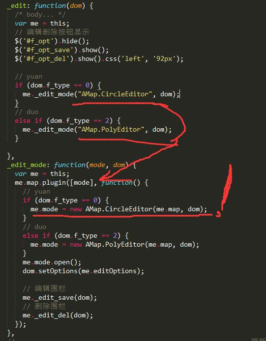

1.运行
* $ git clone 地址
* npm install
* $ gulp;
2.项目说明
- 此项目是 市区监控--实时追踪 的第二模块。具体业务逻辑和百度这个模块的一模一样。
- 大部分的API名字和百度都一样，这样也好，减少我们开发的成本。
3.不同的地方：
- 高德Circle和Poly内置没有编辑模式的方法，需要高度加载各自的编辑模块，开启指定覆盖物才能开启编辑模式：

- 高德的最优视角方法比百度好用。百度的需要拿到你要最优化的marker的pt,高德不需要，他内部函数会自己算页面上覆盖物的视角。
- 次版本不同于百度--围栏设置，百度的围栏新增、修改、删除都是基于一个借口，就是每次都是拿到页面上所有的围栏进行数据采集和发送。但是这样有个缺点，就是每次都会有大量数据进行服务器的保存，修改几个围栏，也是大量的重复数据重复保存。所以百度围栏的前端JS的方法设置是一个借口的版本。高德这版本的围栏设置都是单个围栏保存，修改和删除。这样比较合理。
4.小结
- 用过百度的，再学习高德地图没有任何难度。项目需要，我就顺手弄了这个例子。各位自便。
- 多敲少说没用的话。